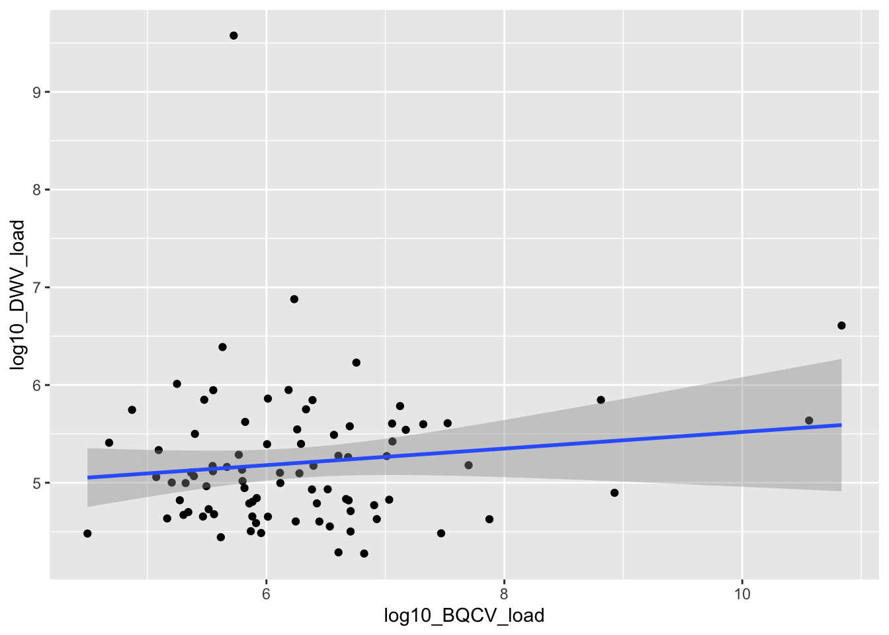
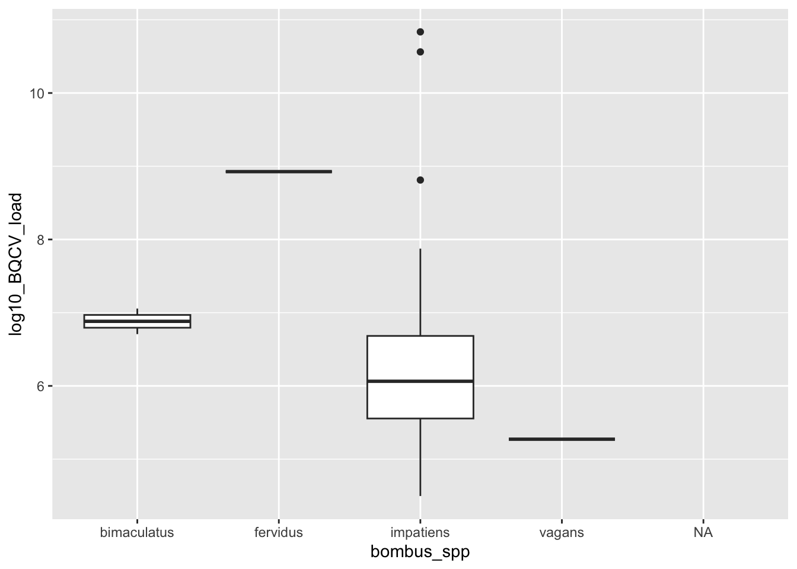
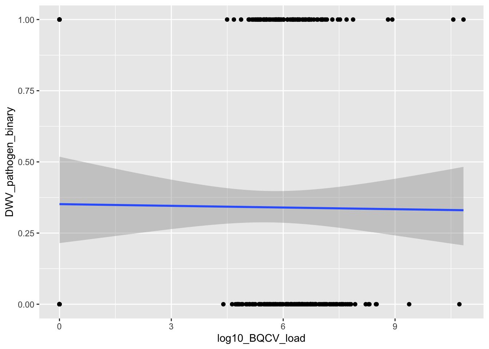
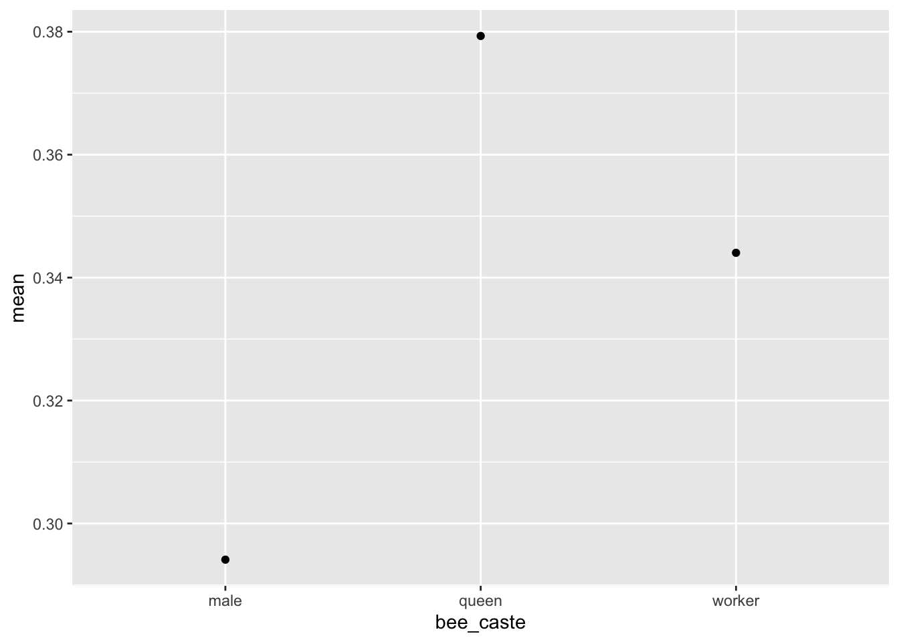
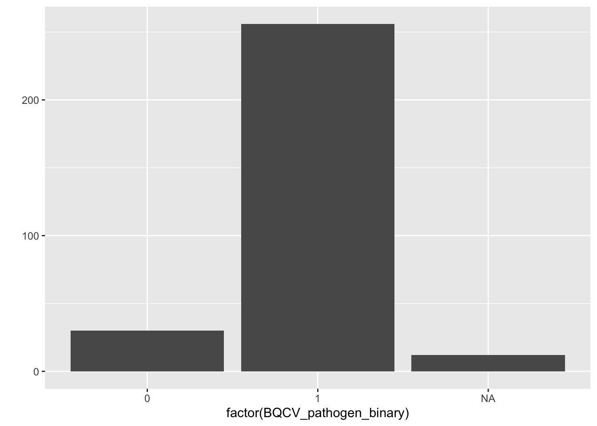
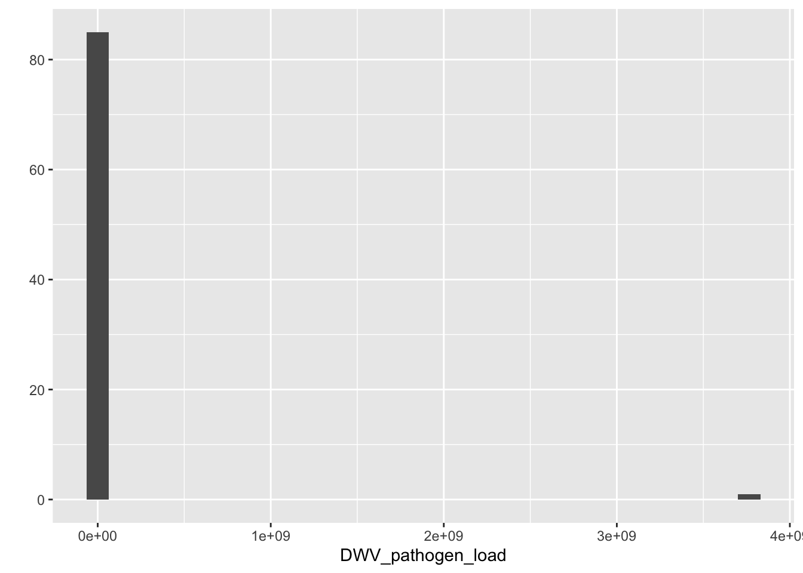
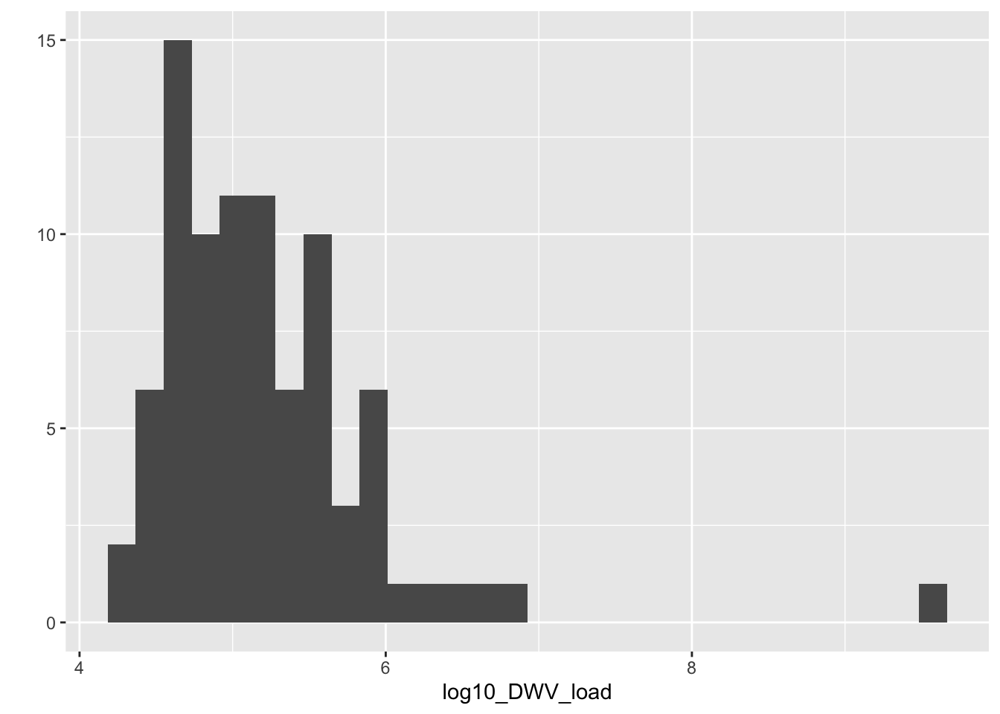
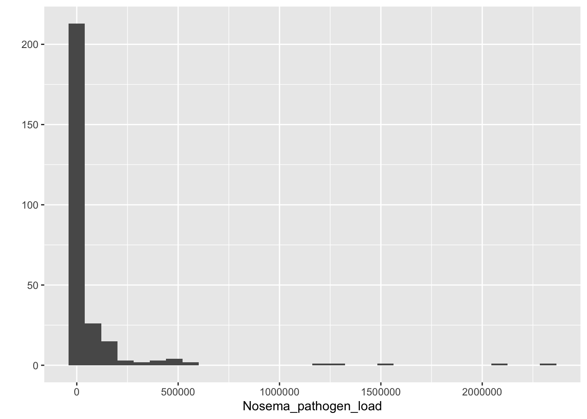
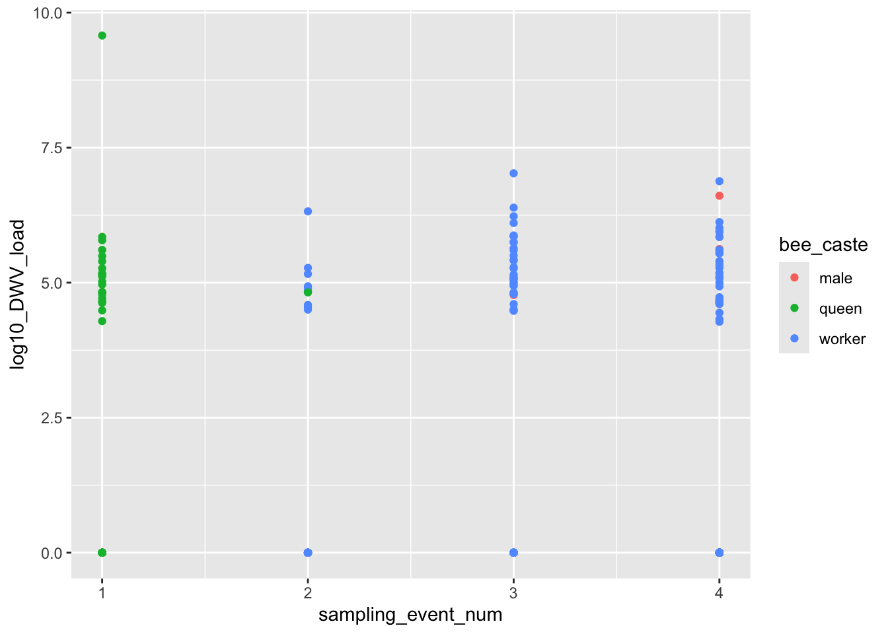

library(tidyverse)
library(lubridate)
library(lme4)
library(car)GLMs, GLMMs, and Choosing a Distribution
1 Overview
This lecture uses the Bumble Bee Disease Seasonal Variation dataset and is organized into five core topics:
- Model structure for the four main
y ~ xdata-type combinations - Testing for significance
- Distributions and log-transformation
- Random effects and nesting
- Interaction effects
The response variable should usually drive the choice of model family. In this dataset we can use:
- BQCV, DWV and Nosema prevalence as a binary response
- BQCV, DWV and Nosema load as a continuous response,
- Bee Species, Host Plant, and Bee Cast as categorical predictors
- and Sampling Event as a time-like predictor.
- Site Code as random effects
2 Load packages and import data
bee_dat <- read_csv("data/Burnham_field_data_pathogens_wide.csv")
bee_dat <- bee_dat %>%
mutate(
sampling_date = mdy(sampling_date),
site_code = factor(site_code),
field_id = factor(field_id),
bee_caste = factor(bee_caste),
bombus_spp = factor(bombus_spp),
host_plant = factor(host_plant),
sampling_event = factor(sampling_event),
sampling_event_num = as.numeric(as.character(sampling_event)),
log10_BQCV_load = log10(BQCV_pathogen_load + 1),
log10_DWV_load = log10(DWV_pathogen_load + 1),
log10_Nosema_load = log10(Nosema_pathogen_load + 1)
)
glimpse(bee_dat)Rows: 298
Columns: 18
$ id <dbl> 1, 3, 4, 5, 6, 8, 10, 11, 12, 13, 15, 16, 17, 1…
$ sampling_date <date> 2020-09-09, 2020-09-10, 2020-09-10, 2020-09-09…
$ site_code <fct> BOST, MUDGE, MUDGE, BOST, CIND, MUDGE, CIND, BO…
$ field_id <fct> 6, 18, 11, 11, 14, 4, 13, 38, 5, 12, 18, 23, 20…
$ bombus_spp <fct> impatiens, impatiens, impatiens, impatiens, imp…
$ host_plant <fct> solidago, crown vetch, crown vetch, solidago, k…
$ bee_caste <fct> worker, worker, worker, male, worker, worker, w…
$ sampling_event <fct> 4, 4, 4, 4, 4, 4, 4, 2, 4, 4, 4, 4, 4, 4, 4, 4,…
$ BQCV_pathogen_binary <dbl> 1, 1, 0, 0, 1, 1, 1, 1, 0, 1, 0, 1, 1, 1, 0, 1,…
$ DWV_pathogen_binary <dbl> 1, 1, 0, 0, 1, 1, 1, 0, 0, 0, 0, 0, 0, 0, 0, 1,…
$ Nosema_pathogen_binary <dbl> NA, 0, 1, NA, 0, NA, 0, 0, 0, 0, 1, 0, 0, 0, 0,…
$ BQCV_pathogen_load <dbl> 2414168.8, 760793.2, 0.0, 0.0, 124236.8, 413814…
$ DWV_pathogen_load <dbl> 85329.54, 45153.03, 0.00, 0.00, 215750.28, 2769…
$ Nosema_pathogen_load <dbl> NA, 0, 225000, NA, 0, NA, 0, 0, 0, 0, 50000, 0,…
$ sampling_event_num <dbl> 4, 4, 4, 4, 4, 4, 4, 2, 4, 4, 4, 4, 4, 4, 4, 4,…
$ log10_BQCV_load <dbl> 6.382768, 5.881267, 0.000000, 0.000000, 5.09425…
$ log10_DWV_load <dbl> 4.931105, 4.654697, 0.000000, 0.000000, 5.33395…
$ log10_Nosema_load <dbl> NA, 0.000000, 5.352184, NA, 0.000000, NA, 0.000…3 1. Model structure for the four main variable type combinations
A useful starting point is the standard y ~ x matrix.
Response y |
Predictor x |
Typical figure | Common model |
|---|---|---|---|
| Continuous | Continuous | scatterplot | lm() / Gaussian GLM |
| Continuous | Categorical | boxplot | lm() / ANOVA-style model |
| Categorical | Continuous | logistic curve | glm(..., family = binomial) |
| Categorical | Categorical | grouped proportions | glm(..., family = binomial) |
3.1 Continuous y ~ Continuous x
Use DWV load as the response and BQCV as the predictor.
# filter for only pos:
df_filtered <- bee_dat[bee_dat$log10_DWV_load > 0 & bee_dat$log10_BQCV_load > 0, ]
qplot(
x = log10_BQCV_load,
y = log10_DWV_load,
data = df_filtered) +
geom_smooth(method = "lm", se = TRUE)
m_cont_cont <- lm(log10_DWV_load ~ log10_BQCV_load, data = df_filtered)
Anova(m_cont_cont)Anova Table (Type II tests)
Response: log10_DWV_load
Sum Sq Df F value Pr(>F)
log10_BQCV_load 0.695 1 1.3531 0.248
Residuals 43.145 84 3.2 Continuous y ~ Categorical x
Use BQCV load as the response and bee spp as the categorical predictor.
qplot(
x = bombus_spp,
y = log10_BQCV_load,
data = df_filtered,
geom = "boxplot")
m_cont_cat <- lm(log10_BQCV_load ~ bombus_spp, data = df_filtered)
Anova(m_cont_cat)Anova Table (Type II tests)
Response: log10_BQCV_load
Sum Sq Df F value Pr(>F)
bombus_spp 8.826 3 2.7475 0.0481 *
Residuals 87.810 82
---
Signif. codes: 0 '***' 0.001 '**' 0.01 '*' 0.05 '.' 0.1 ' ' 13.3 Categorical y ~ Continuous x
Use BQCV presence/absence as the response and sampling_event as a numeric predictor.
qplot(
x = log10_BQCV_load,
y = DWV_pathogen_binary,
data = bee_dat) +
geom_smooth(
method = "glm",
method.args = list(family = "binomial"))
m_cat_cont <- glm(
DWV_pathogen_binary ~ log10_BQCV_load,
data = bee_dat,
family = binomial(link="logit")
)
Anova(m_cat_cont)Analysis of Deviance Table (Type II tests)
Response: DWV_pathogen_binary
LR Chisq Df Pr(>Chisq)
log10_BQCV_load 0.023025 1 0.87943.4 Categorical y ~ Categorical x
Use DWV presence/absence as the response and bee_caste as the predictor.
# summarize
sm <- bee_dat %>%
group_by(bee_caste) %>%
dplyr::summarise(
mean = mean(DWV_pathogen_binary, na.rm=T),
)
qplot(
x = bee_caste,
y = mean,
data = sm
)
m_cat_cat <- glm(
DWV_pathogen_binary ~ bee_caste,
data = bee_dat,
family = binomial(link="logit")
)
summary(m_cat_cat)
Call:
glm(formula = DWV_pathogen_binary ~ bee_caste, family = binomial(link = "logit"),
data = bee_dat)
Deviance Residuals:
Min 1Q Median 3Q Max
-0.9767 -0.9183 -0.9183 1.4608 1.5645
Coefficients:
Estimate Std. Error z value Pr(>|z|)
(Intercept) -0.8755 0.5323 -1.645 0.100
bee_castequeen 0.3830 0.5971 0.641 0.521
bee_casteworker 0.2301 0.5511 0.418 0.676
(Dispersion parameter for binomial family taken to be 1)
Null deviance: 378.72 on 292 degrees of freedom
Residual deviance: 378.23 on 290 degrees of freedom
(5 observations deleted due to missingness)
AIC: 384.23
Number of Fisher Scoring iterations: 44 2. Testing for significance
There is more than one way to test whether predictors improve a model.
4.1 Let’s Create a couple of new models and test for significance:
# a model using a binomial dist.
bin_mod <- glm(data = bee_dat, DWV_pathogen_binary ~ bombus_spp * sampling_event + host_plant, family = binomial(link="logit"))
# a gaussian model:
gaus_mod <- lm(data = bee_dat, log10_Nosema_load ~ sampling_event * host_plant)4.2 Coefficient tests from the model summary
summary(bin_mod)
Call:
glm(formula = DWV_pathogen_binary ~ bombus_spp * sampling_event +
host_plant, family = binomial(link = "logit"), data = bee_dat)
Deviance Residuals:
Min 1Q Median 3Q Max
-1.2120 -0.9120 -0.7601 1.3626 1.9640
Coefficients: (9 not defined because of singularities)
Estimate Std. Error z value Pr(>|z|)
(Intercept) -1.623e+00 3.724e+05 0.000 1.000
bombus_sppfervidus 4.226e+04 6.711e+07 0.001 0.999
bombus_sppimpatiens 1.135e+00 2.006e+00 0.566 0.571
bombus_sppternarius -1.310e+06 6.711e+07 -0.020 0.984
bombus_sppvagans 2.384e+01 6.201e+04 0.000 1.000
sampling_event2 -1.599e+00 2.230e+05 0.000 1.000
sampling_event3 -2.512e+01 2.150e+05 0.000 1.000
sampling_event4 2.131e+14 2.377e+14 0.897 0.370
host_plantcrown vetch 2.569e+01 3.041e+05 0.000 1.000
host_plantdandelion -1.748e-01 3.724e+05 0.000 1.000
host_plantflight 3.163e-03 3.724e+05 0.000 1.000
host_plantjewel weed 2.519e+01 3.041e+05 0.000 1.000
host_plantknot weed 5.287e+01 3.821e+05 0.000 1.000
host_plantmint 4.320e-01 3.724e+05 0.000 1.000
host_plantred clover 2.513e+01 3.041e+05 0.000 1.000
host_plantsaint johns wort 2.525e+01 3.041e+05 0.000 1.000
host_plantsolidago 2.543e+01 3.041e+05 0.000 1.000
host_plantthistle 6.310e-04 4.300e+05 0.000 1.000
host_plantviolet -1.487e-01 3.724e+05 0.000 1.000
host_plantwoody yellow 4.489e-01 3.724e+05 0.000 1.000
bombus_sppfervidus:sampling_event2 NA NA NA NA
bombus_sppimpatiens:sampling_event2 -2.403e+01 5.902e+04 0.000 1.000
bombus_sppternarius:sampling_event2 NA NA NA NA
bombus_sppvagans:sampling_event2 NA NA NA NA
bombus_sppfervidus:sampling_event3 NA NA NA NA
bombus_sppimpatiens:sampling_event3 NA NA NA NA
bombus_sppternarius:sampling_event3 NA NA NA NA
bombus_sppvagans:sampling_event3 NA NA NA NA
bombus_sppfervidus:sampling_event4 NA NA NA NA
bombus_sppimpatiens:sampling_event4 -2.131e+14 2.377e+14 -0.897 0.370
bombus_sppternarius:sampling_event4 NA NA NA NA
bombus_sppvagans:sampling_event4 -2.131e+14 2.377e+14 -0.897 0.370
(Dispersion parameter for binomial family taken to be 1)
Null deviance: 377.00 on 290 degrees of freedom
Residual deviance: 349.87 on 268 degrees of freedom
(7 observations deleted due to missingness)
AIC: 395.87
Number of Fisher Scoring iterations: 25summary(gaus_mod)
Call:
lm(formula = log10_Nosema_load ~ sampling_event * host_plant,
data = bee_dat)
Residuals:
Min 1Q Median 3Q Max
-3.549 -1.268 -1.240 2.155 5.126
Coefficients: (31 not defined because of singularities)
Estimate Std. Error t value
(Intercept) 5.211e-01 2.819e+00 0.185
sampling_event2 3.482e+00 2.420e+00 1.439
sampling_event3 -5.180e-01 1.771e+00 -0.292
sampling_event4 -5.211e-01 1.688e+00 -0.309
host_plantcrown vetch 1.303e+00 2.314e+00 0.563
host_plantdandelion 7.962e-01 2.849e+00 0.279
host_plantflight 2.199e+00 2.766e+00 0.795
host_plantjewel weed 7.763e-01 2.317e+00 0.335
host_plantknot weed -1.482e-14 2.766e+00 0.000
host_plantmint 1.678e+00 3.240e+00 0.518
host_plantred clover 1.240e+00 2.281e+00 0.544
host_plantsaint johns wort 1.085e+00 2.531e+00 0.429
host_plantsolidago 1.269e+00 2.295e+00 0.553
host_plantthistle -7.621e-15 3.193e+00 0.000
host_plantviolet -5.211e-01 3.106e+00 -0.168
host_plantwoody yellow 3.877e+00 3.612e+00 1.073
sampling_event2:host_plantcrown vetch -1.757e+00 2.130e+00 -0.825
sampling_event3:host_plantcrown vetch 1.106e+00 8.413e-01 1.314
sampling_event4:host_plantcrown vetch NA NA NA
sampling_event2:host_plantdandelion NA NA NA
sampling_event3:host_plantdandelion NA NA NA
sampling_event4:host_plantdandelion NA NA NA
sampling_event2:host_plantflight NA NA NA
sampling_event3:host_plantflight NA NA NA
sampling_event4:host_plantflight NA NA NA
sampling_event2:host_plantjewel weed NA NA NA
sampling_event3:host_plantjewel weed 4.096e+00 2.378e+00 1.722
sampling_event4:host_plantjewel weed NA NA NA
sampling_event2:host_plantknot weed NA NA NA
sampling_event3:host_plantknot weed 5.094e+00 2.817e+00 1.808
sampling_event4:host_plantknot weed NA NA NA
sampling_event2:host_plantmint NA NA NA
sampling_event3:host_plantmint NA NA NA
sampling_event4:host_plantmint NA NA NA
sampling_event2:host_plantred clover -4.085e+00 1.770e+00 -2.308
sampling_event3:host_plantred clover NA NA NA
sampling_event4:host_plantred clover NA NA NA
sampling_event2:host_plantsaint johns wort NA NA NA
sampling_event3:host_plantsaint johns wort NA NA NA
sampling_event4:host_plantsaint johns wort NA NA NA
sampling_event2:host_plantsolidago NA NA NA
sampling_event3:host_plantsolidago NA NA NA
sampling_event4:host_plantsolidago NA NA NA
sampling_event2:host_plantthistle NA NA NA
sampling_event3:host_plantthistle NA NA NA
sampling_event4:host_plantthistle NA NA NA
sampling_event2:host_plantviolet NA NA NA
sampling_event3:host_plantviolet NA NA NA
sampling_event4:host_plantviolet NA NA NA
sampling_event2:host_plantwoody yellow NA NA NA
sampling_event3:host_plantwoody yellow NA NA NA
sampling_event4:host_plantwoody yellow NA NA NA
Pr(>|t|)
(Intercept) 0.8535
sampling_event2 0.1515
sampling_event3 0.7702
sampling_event4 0.7578
host_plantcrown vetch 0.5737
host_plantdandelion 0.7801
host_plantflight 0.4273
host_plantjewel weed 0.7378
host_plantknot weed 1.0000
host_plantmint 0.6050
host_plantred clover 0.5872
host_plantsaint johns wort 0.6686
host_plantsolidago 0.5810
host_plantthistle 1.0000
host_plantviolet 0.8669
host_plantwoody yellow 0.2842
sampling_event2:host_plantcrown vetch 0.4101
sampling_event3:host_plantcrown vetch 0.1900
sampling_event4:host_plantcrown vetch NA
sampling_event2:host_plantdandelion NA
sampling_event3:host_plantdandelion NA
sampling_event4:host_plantdandelion NA
sampling_event2:host_plantflight NA
sampling_event3:host_plantflight NA
sampling_event4:host_plantflight NA
sampling_event2:host_plantjewel weed NA
sampling_event3:host_plantjewel weed 0.0863 .
sampling_event4:host_plantjewel weed NA
sampling_event2:host_plantknot weed NA
sampling_event3:host_plantknot weed 0.0718 .
sampling_event4:host_plantknot weed NA
sampling_event2:host_plantmint NA
sampling_event3:host_plantmint NA
sampling_event4:host_plantmint NA
sampling_event2:host_plantred clover 0.0218 *
sampling_event3:host_plantred clover NA
sampling_event4:host_plantred clover NA
sampling_event2:host_plantsaint johns wort NA
sampling_event3:host_plantsaint johns wort NA
sampling_event4:host_plantsaint johns wort NA
sampling_event2:host_plantsolidago NA
sampling_event3:host_plantsolidago NA
sampling_event4:host_plantsolidago NA
sampling_event2:host_plantthistle NA
sampling_event3:host_plantthistle NA
sampling_event4:host_plantthistle NA
sampling_event2:host_plantviolet NA
sampling_event3:host_plantviolet NA
sampling_event4:host_plantviolet NA
sampling_event2:host_plantwoody yellow NA
sampling_event3:host_plantwoody yellow NA
sampling_event4:host_plantwoody yellow NA
---
Signif. codes: 0 '***' 0.001 '**' 0.01 '*' 0.05 '.' 0.1 ' ' 1
Residual standard error: 2.258 on 250 degrees of freedom
(27 observations deleted due to missingness)
Multiple R-squared: 0.1227, Adjusted R-squared: 0.05254
F-statistic: 1.749 on 20 and 250 DF, p-value: 0.02687These tests ask whether individual coefficients differ from zero, given the current model structure.
4.3 Type II or Type III tests with car
Anova(bin_mod, type = 2)Analysis of Deviance Table (Type II tests)
Response: DWV_pathogen_binary
LR Chisq Df Pr(>Chisq)
bombus_spp 4.19 4 0.3810
sampling_event 5.95 3 0.1140
host_plant 2144.88 12 <2e-16 ***
bombus_spp:sampling_event 3.55 3 0.3138
---
Signif. codes: 0 '***' 0.001 '**' 0.01 '*' 0.05 '.' 0.1 ' ' 1Anova(gaus_mod, type = 2)Anova Table (Type II tests)
Response: log10_Nosema_load
Sum Sq Df F value Pr(>F)
sampling_event 14.47 3 0.9457 0.41913
host_plant 72.09 12 1.1782 0.29911
sampling_event:host_plant 73.51 5 2.8834 0.01499 *
Residuals 1274.71 250
---
Signif. codes: 0 '***' 0.001 '**' 0.01 '*' 0.05 '.' 0.1 ' ' 1These are often useful when predictors have multiple levels or when you want term-level tests rather than coefficient-level tests.
Type 1 (Sequential/Hierarchical): Evaluates predictors in a specific order, adding them one by one. The order matters, as each variable is tested based on what is already in the model, commonly used for testing hierarchical models.
Type 2 (Marginal/Hierarchical): Tests each effect after all other appropriate effects are in the model (e.g., testing main effects with interaction terms included, but not testing higher-order interactions simultaneously). It does not assume a specific order.
Type 3 (Partial/Marginal): Evaluates each effect after adjusting for all other effects in the model, regardless of order. It is generally the default in many software packages for ANOVA and regression, testing if a variable adds value to the model over all others.
4.4 Likelihood ratio test: full vs null model
m_dwv_null <- lm(data = df_filtered, log10_DWV_load ~ 1)
m_dwv_full <- lm(data = df_filtered, log10_DWV_load ~ sampling_event + host_plant)
anova(m_dwv_null, m_dwv_full, test = "LRT")Analysis of Variance Table
Model 1: log10_DWV_load ~ 1
Model 2: log10_DWV_load ~ sampling_event + host_plant
Res.Df RSS Df Sum of Sq Pr(>Chi)
1 85 43.841
2 73 20.736 12 23.105 2.289e-12 ***
---
Signif. codes: 0 '***' 0.001 '**' 0.01 '*' 0.05 '.' 0.1 ' ' 1This asks whether the predictors improve fit compared with a model containing only an intercept.
4.5 Likelihood ratio test: full vs reduced model
m_dwv_reduced <- lm(data = df_filtered, log10_DWV_load ~ sampling_event)
anova(m_dwv_reduced, m_dwv_full, test = "LRT")Analysis of Variance Table
Model 1: log10_DWV_load ~ sampling_event
Model 2: log10_DWV_load ~ sampling_event + host_plant
Res.Df RSS Df Sum of Sq Pr(>Chi)
1 82 42.372
2 73 20.736 9 21.636 9.277e-13 ***
---
Signif. codes: 0 '***' 0.001 '**' 0.01 '*' 0.05 '.' 0.1 ' ' 1This asks whether the additional term improves the model beyond what is already included.
4.6 Term deletion with drop1()
drop1(m_dwv_full, test = "Chisq")Single term deletions
Model:
log10_DWV_load ~ sampling_event + host_plant
Df Sum of Sq RSS AIC Pr(>Chi)
<none> 20.736 -96.334
sampling_event 2 1.1806 21.916 -95.572 0.09244 .
host_plant 9 21.6363 42.372 -52.876 7.013e-10 ***
---
Signif. codes: 0 '***' 0.001 '**' 0.01 '*' 0.05 '.' 0.1 ' ' 1This is a convenient way to evaluate each term within the same model.
5 3. Distributions and log transformation
The response variable should usually determine the distribution.
5.1 First, look at the response distributions
5.1.1 Binary response: BQCV presence
qplot(
x = factor(BQCV_pathogen_binary),
data = bee_dat,
geom = "bar")
A 0/1 response is naturally modeled with a binomial GLM or GLMM.
5.1.2 Continuous raw response: DWV load
qplot(
x = DWV_pathogen_load,
data = df_filtered,
geom = "histogram",
bins = 30)
Raw pathogen loads are often strongly right-skewed.
5.1.3 Log-transformed continuous response: DWV load
qplot(
x = log10_DWV_load,
data = df_filtered,
geom = "histogram",
bins = 30)
The log transform often makes the distribution more symmetric and easier to model with a Gaussian response.
5.1.4 Continuous raw response: Nosema load
qplot(
x = Nosema_pathogen_load,
data = bee_dat,
geom = "histogram",
bins = 30)
5.2 Distribution guide
- Use Gaussian models for continuous responses that are roughly symmetric, often after transformation.
- Use binomial models for 0/1 responses such as pathogen presence.
- Use Gamma models for positive continuous responses when you want to model the raw scale directly.
- Use Poisson or negative binomial for count responses, which are not the main response type in this dataset.
5.3 Why log-transform?
A log transform is useful when:
- the response is continuous and positive,
- the raw data are strongly right-skewed,
- variance increases with the mean,
- and interpretation on a multiplicative scale makes sense.
m_dwv_log <- lm(log10_DWV_load ~ sampling_event + bee_caste, data = bee_dat)
summary(m_dwv_log)
Call:
lm(formula = log10_DWV_load ~ sampling_event + bee_caste, data = bee_dat)
Residuals:
Min 1Q Median 3Q Max
-2.470 -1.977 -1.420 2.849 7.598
Coefficients:
Estimate Std. Error t value Pr(>|t|)
(Intercept) 1.3927 1.9798 0.703 0.482
sampling_event2 0.4326 1.8130 0.239 0.812
sampling_event3 1.2396 1.8942 0.654 0.513
sampling_event4 0.1895 1.8846 0.101 0.920
bee_castequeen 0.5846 1.9509 0.300 0.765
bee_casteworker -0.1619 0.6489 -0.249 0.803
Residual standard error: 2.519 on 287 degrees of freedom
(5 observations deleted due to missingness)
Multiple R-squared: 0.02819, Adjusted R-squared: 0.01126
F-statistic: 1.665 on 5 and 287 DF, p-value: 0.143Do not log-transform binary responses. Also, logging is not mandatory if a different GLM family is more natural for the response.
6 4. Random effects and nesting
GLMMs extend GLMs by adding random effects, which account for grouped or non-independent observations.
In field biology, non-independence often arises because samples are collected within the same site, field, or other grouping level.
6.1 Why random effects?
Use random effects when:
- observations are clustered,
- you expect groups to differ in baseline response,
- and the group levels are better treated as a sample from a broader population rather than as fixed categories of direct interest.
6.2 Random intercept example
Here is a binomial GLMM for BQCV presence with a random intercept for site.
g_bqcv_site <- lmer(
log10_BQCV_load ~ bombus_spp + sampling_event + (1 | site_code),
data = df_filtered)
Anova(g_bqcv_site)Analysis of Deviance Table (Type II Wald chisquare tests)
Response: log10_BQCV_load
Chisq Df Pr(>Chisq)
bombus_spp 6.3053 3 0.09767 .
sampling_event 0.5113 3 0.91639
---
Signif. codes: 0 '***' 0.001 '**' 0.01 '*' 0.05 '.' 0.1 ' ' 16.3 Nested random effects
If fields are nested within sites, we can write that as field_id within site_code.
g_bqcv_site <- lmer(
log10_BQCV_load ~ bombus_spp + (1 | site_code/sampling_event),
data = df_filtered)
Anova(g_bqcv_site)Analysis of Deviance Table (Type II Wald chisquare tests)
Response: log10_BQCV_load
Chisq Df Pr(>Chisq)
bombus_spp 8.032 3 0.04536 *
---
Signif. codes: 0 '***' 0.001 '**' 0.01 '*' 0.05 '.' 0.1 ' ' 1This expands to random intercepts for site ID and for sampling event nested within site.
6.4 Gamma mixed model example
We can also use a mixed model for a different response error dist.
# make pos only nosema
nosPos <- bee_dat[bee_dat$Nosema_pathogen_load > 0,]
# gamma
nos_gamma <- glmer(
Nosema_pathogen_load ~ site_code + bombus_spp + (1 | sampling_event),
data = nosPos, family = Gamma)
Anova(nos_gamma)Analysis of Deviance Table (Type II Wald chisquare tests)
Response: Nosema_pathogen_load
Chisq Df Pr(>Chisq)
site_code 2.0756 4 0.7219
bombus_spp 5.6774 2 0.0585 .
---
Signif. codes: 0 '***' 0.001 '**' 0.01 '*' 0.05 '.' 0.1 ' ' 1# log
nos_log <- lmer(
log10_Nosema_load ~ site_code + bombus_spp + (1 | sampling_event),
data = nosPos)
Anova(nos_log)Analysis of Deviance Table (Type II Wald chisquare tests)
Response: log10_Nosema_load
Chisq Df Pr(>Chisq)
site_code 1.7864 4 0.7750
bombus_spp 4.5417 2 0.1032In practice, random effects are justified both statistically and biologically. If repeated samples come from shared sites or fields, independence is violated, and mixed models are often the better choice.
7
8 5. Interactions
Interactions ask whether the effect of one predictor depends on the level of another predictor.
Because sampling_event is time-like, it is a useful interaction term in this dataset.
8.1 Example 1: interaction in a Gaussian model
Does the change in DWV load across sampling event differ by caste?
qplot(
x = sampling_event_num,
y = log10_DWV_load,
color = bee_caste,
data = bee_dat)
m_dwv_interaction <- lmer(log10_DWV_load ~ sampling_event * bee_caste + (1 | site_code), data = bee_dat)
summary(m_dwv_interaction)Linear mixed model fit by REML ['lmerMod']
Formula: log10_DWV_load ~ sampling_event * bee_caste + (1 | site_code)
Data: bee_dat
REML criterion at convergence: 1360.3
Scaled residuals:
Min 1Q Median 3Q Max
-0.9681 -0.7846 -0.5707 1.1295 3.0150
Random effects:
Groups Name Variance Std.Dev.
site_code (Intercept) 0.000 0.00
Residual 6.352 2.52
Number of obs: 293, groups: site_code, 5
Fixed effects:
Estimate Std. Error t value
(Intercept) 1.24091 1.98794 0.624
sampling_event2 0.43259 1.81366 0.239
sampling_event3 3.52961 3.20994 1.100
sampling_event4 0.20765 1.88544 0.110
bee_castequeen 0.73639 1.95920 0.376
bee_casteworker -0.01012 0.67143 -0.015
sampling_event3:bee_casteworker -2.32058 2.62553 -0.884
Correlation of Fixed Effects:
(Intr) smpl_2 smpl_3 smpl_4 b_cstq b_cstw
smplng_vnt2 -0.912
smplng_vnt3 -0.619 0.565
smplng_vnt4 -0.948 0.962 0.587
bee_casteqn -0.986 0.894 0.610 0.932
bee_cstwrkr -0.338 0.000 0.209 0.043 0.343
smplng_v3:_ 0.086 0.000 -0.807 -0.011 -0.088 -0.256
fit warnings:
fixed-effect model matrix is rank deficient so dropping 5 columns / coefficients
optimizer (nloptwrap) convergence code: 0 (OK)
boundary (singular) fit: see help('isSingular')Anova(m_dwv_interaction, type = 2)Analysis of Deviance Table (Type II Wald chisquare tests)
Response: log10_DWV_load
Chisq Df Pr(>Chisq)
sampling_event 7.9363 3 0.04735 *
bee_caste 0.2267 2 0.89284
sampling_event:bee_caste 0.7812 1 0.37678
---
Signif. codes: 0 '***' 0.001 '**' 0.01 '*' 0.05 '.' 0.1 ' ' 18.2 Example 2: interaction in a binomial model
Does the probability of BQCV infection across sampling event differ by caste?
m_bqcv_interaction <- glm(
BQCV_pathogen_binary ~ sampling_event * log10_DWV_load,
data = bee_dat,
family = binomial(link="logit")
)
summary(m_bqcv_interaction)
Call:
glm(formula = BQCV_pathogen_binary ~ sampling_event * log10_DWV_load,
family = binomial(link = "logit"), data = bee_dat)
Deviance Residuals:
Min 1Q Median 3Q Max
-2.8392 0.1893 0.4854 0.5643 0.6825
Coefficients:
Estimate Std. Error z value Pr(>|z|)
(Intercept) 1.765e+00 4.844e-01 3.645 0.000268 ***
sampling_event2 1.708e+02 1.167e+04 0.015 0.988321
sampling_event3 2.247e+00 1.323e+00 1.699 0.089317 .
sampling_event4 -8.683e-03 5.633e-01 -0.015 0.987700
log10_DWV_load 2.311e-01 2.168e-01 1.066 0.286337
sampling_event2:log10_DWV_load -3.005e+01 2.066e+03 -0.015 0.988393
sampling_event3:log10_DWV_load -6.497e-01 3.260e-01 -1.993 0.046273 *
sampling_event4:log10_DWV_load -1.621e-01 2.459e-01 -0.659 0.509839
---
Signif. codes: 0 '***' 0.001 '**' 0.01 '*' 0.05 '.' 0.1 ' ' 1
(Dispersion parameter for binomial family taken to be 1)
Null deviance: 191.13 on 281 degrees of freedom
Residual deviance: 172.19 on 274 degrees of freedom
(16 observations deleted due to missingness)
AIC: 188.19
Number of Fisher Scoring iterations: 20Anova(m_bqcv_interaction, type = 2)Analysis of Deviance Table (Type II tests)
Response: BQCV_pathogen_binary
LR Chisq Df Pr(>Chisq)
sampling_event 4.1245 3 0.248328
log10_DWV_load 0.1010 1 0.750623
sampling_event:log10_DWV_load 14.7942 3 0.002001 **
---
Signif. codes: 0 '***' 0.001 '**' 0.01 '*' 0.05 '.' 0.1 ' ' 1You can also compare the interaction model to the additive model:
m_bqcv_additive <- glm(
BQCV_pathogen_binary ~ sampling_event + log10_DWV_load,
data = bee_dat,
family = binomial(link="logit")
)
summary(m_bqcv_additive) # higher aic
Call:
glm(formula = BQCV_pathogen_binary ~ sampling_event + log10_DWV_load,
family = binomial(link = "logit"), data = bee_dat)
Deviance Residuals:
Min 1Q Median 3Q Max
-2.5642 0.3883 0.4691 0.5324 0.5760
Coefficients:
Estimate Std. Error z value Pr(>|z|)
(Intercept) 2.15149 0.46345 4.642 3.44e-06 ***
sampling_event2 1.25418 1.10610 1.134 0.257
sampling_event3 0.39586 0.63649 0.622 0.534
sampling_event4 -0.26918 0.50381 -0.534 0.593
log10_DWV_load -0.02471 0.07732 -0.320 0.749
---
Signif. codes: 0 '***' 0.001 '**' 0.01 '*' 0.05 '.' 0.1 ' ' 1
(Dispersion parameter for binomial family taken to be 1)
Null deviance: 191.13 on 281 degrees of freedom
Residual deviance: 186.98 on 277 degrees of freedom
(16 observations deleted due to missingness)
AIC: 196.98
Number of Fisher Scoring iterations: 6Anova(m_bqcv_additive, type = 2)Analysis of Deviance Table (Type II tests)
Response: BQCV_pathogen_binary
LR Chisq Df Pr(>Chisq)
sampling_event 4.1245 3 0.2483
log10_DWV_load 0.1010 1 0.7506anova(m_bqcv_additive, m_bqcv_interaction, test = "Chisq")Analysis of Deviance Table
Model 1: BQCV_pathogen_binary ~ sampling_event + log10_DWV_load
Model 2: BQCV_pathogen_binary ~ sampling_event * log10_DWV_load
Resid. Df Resid. Dev Df Deviance Pr(>Chi)
1 277 186.98
2 274 172.19 3 14.794 0.002001 **
---
Signif. codes: 0 '***' 0.001 '**' 0.01 '*' 0.05 '.' 0.1 ' ' 19 Closing summary
- Start by identifying whether the response is continuous or categorical.
- Use the
y ~ xmatrix to choose a basic model structure. - Inspect the distribution of the response before choosing a family.
- Use log transformation for right-skewed continuous responses when appropriate.
- Use interactions when the effect of one predictor may depend on another.
- Use random effects when observations are grouped or nested.
- Test significance using several complementary tools:
summary(),car::Anova(), likelihood ratio tests, and reduced-model comparisons.